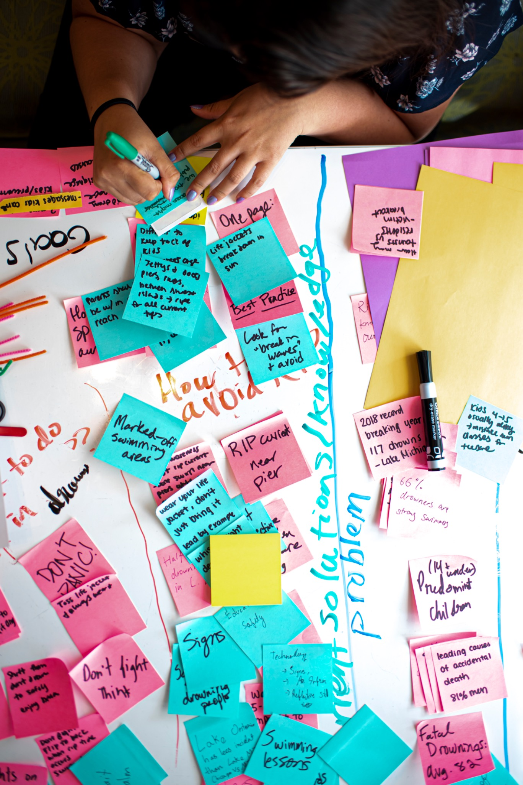

1. Context
What was the project, who was it for, and what problem were you trying to solve?

University of Michigan School of Information
Career Development Resource Hub
A portfolio helps employers understand how you think, how you solve problems, and how your skills translate into real work. Focus on clarity, process, and reflection.

What was the project, who was it for, and what problem were you trying to solve?
Describe your methods, constraints, and the choices you made along the way.
Show the artifact, prototype, model, or output and explain why it matters.
Share what you learned and how the project changed your thinking or skill set.